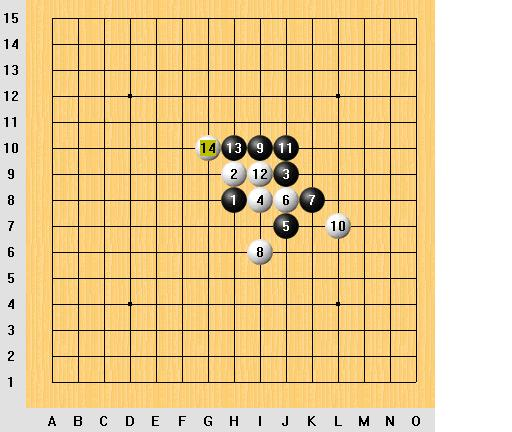
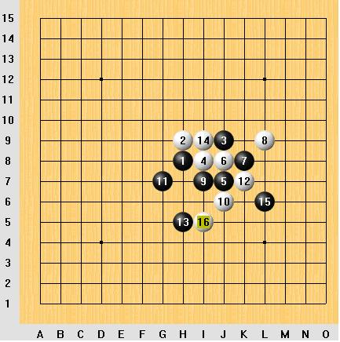
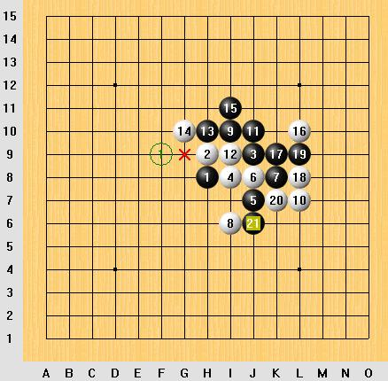

问几个 残月通峡月一打必胜问题
#1 问几个 残月通峡月一打必胜问题作者：sheal 发表时间：2007-8-1 19:08:25
问题一：白12,黑13,白14后，黑能必胜么？还是需要换一个黑13?

问题二：白16后，黑如何必胜？
#2 Re:问几个 残月通峡月一打必胜问题作者：屏蔽 发表时间：2007-8-1 22:44:48
第一个看起来复杂，但是在白棋没有足够反击的情况下，黑15是简单必胜形。
#3 Re:问几个 残月通峡月一打必胜问题作者：屏蔽 发表时间：2007-8-1 22:49:00
糟了……你们看得到吗？我机器刚装，我检查一下有没有Java……现在我这里打叉了。
第一图，15－I11
#4 Re:问几个 残月通峡月一打必胜问题作者：屏蔽 发表时间：2007-8-1 23:05:26
第二图：要是我，我就单挡。
#5 Re:问几个 残月通峡月一打必胜问题作者：江南新绿 发表时间：2007-8-2 7:43:58
问题二从感觉上看是五珠上的一个图,13=16简明必胜.如果按1楼原图,17下面单防一手,白棋被迫在上面进攻,黑棋以后封锁白棋就可以大优,或许可以必胜也说不定.
#6 Re:问几个 残月通峡月一打必胜问题作者：屏蔽 发表时间：2007-8-2 16:29:11
2楼的Rena我没认真打，现在发现有些小错误，但是不影响主要内容，大家将就一下吧……#7 Re:问几个 残月通峡月一打必胜问题作者：sheal 发表时间：2007-8-2 18:24:28
这个黑5就只剩下上面的第一个没有解决的。其他都必胜了。
第二个问题 13-16必胜了。
这个黑21被白棋VCT了。用renlib3.51带的VCT运算器

#8 Re:问几个 残月通峡月一打必胜问题作者：屏蔽 发表时间：2007-8-2 21:13:17
竟然有这样BT的抓禁手段啊？……我看看能不能修正。#9 Re:问几个 残月通峡月一打必胜问题作者：loway 发表时间：2007-8-2 21:54:29
新手学习中#10 Re:问几个 残月通峡月一打必胜问题作者：sheal 发表时间：2007-8-4 9:37:44
除问题一的白12外。我下次把这个黑5的其他防点的终结简谱发上来。因为还没做完。#11 Re:问几个 残月通峡月一打必胜问题作者：江南新绿 发表时间：2007-8-4 21:02:14
图1黑胜。
#12 Re:Re:问几个 残月通峡月一打必胜问题作者：酷妞 发表时间：2007-8-5 4:07:19
引用：
原文由 屏蔽 发表于 2007-8-2 16:29:11 :
2楼的Rena我没认真打，现在发现有些小错误，但是不影响主要内容，大家将就一下吧……
笑死了，2楼的rena可不是小错，而是错大了。错到了黑必胜走成了白必胜。半瓶子水爱晃荡没关系，误人子弟就不太好了。谁要是看了你的图真当作回事来学，不是到大霉了？不过这个是可以黑必胜的，一点都不难，而且还好几套胜法。
#13 Re:问几个 残月通峡月一打必胜问题作者：sheal 发表时间：2007-8-5 10:28:25
求教问题一怎么黑胜啊?多谢了
#14 Re:问几个 残月通峡月一打必胜问题作者：江南新绿 发表时间：2007-8-5 14:49:43
第一个图在可以通过通型查找到的.并不算难的.
图2,.参见江南新绿的五珠定石修订稿
#15 Re:问几个 残月通峡月一打必胜问题作者：木月 发表时间：2007-8-5 22:03:34
噢耶,厉害噢#16 Re:问几个 残月通峡月一打必胜问题作者：wd1988 发表时间：2008-6-26 18:53:23
回复帖子有威望么？